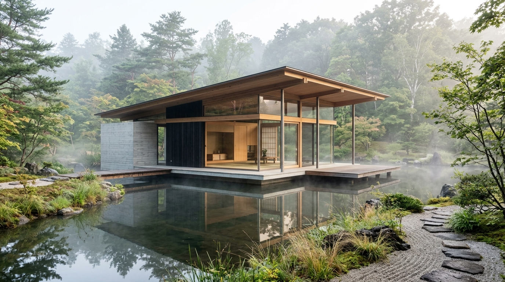

The Kyoto Lake Sanctuary
Kyoto, Japan • 2025
Cantilevered board-formed concrete pavilion resting over mountain spring pool. Traditional kanawa-tsugi joinery in smoked yakisugi cedar.
| FOOTPRINT | 340 m² |
| STRUCTURAL SYSTEM | Monolithic Thermal Concrete |
| SOLAR ORIENTATION | True South-Southwest (194°) |